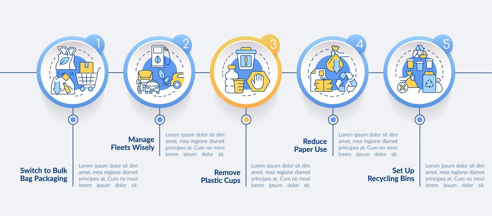

As you can likely deduce from its being the first of the three R’s, reducing is the best way to go about managing solid waste. It’s quite simple really, the less you use the less waste you will produce. This R causes the most unease in consumers because we tend to think we need to cut back on everything or we won’t be making an impact. This is not the case, though. By just doing a few things to cut back you can noticeably reduce your waste without totally altering your lifestyle. You could do this by: Buying products with less packaging. Did you know that 30% of the waste in our landfills comes from product packaging? When shopping for items choose the ones in just one bog or bag as opposed to those that are double and triple packaged. Buying products in bulk. By buying more of the same item all at once you reduce the overall amount of packaging you will encounter. Try to stay away from disposable goods. In particular, paper plates, cups, and plastic utensils. Buy durable goods. Especially when making a big purchase look into the history and reviews of the item you are buying. By buying something that will last you help to make sure wastes will stay out of landfills for longer.
The second R is for reuse. This one is becoming more and more popular with the surge of upcycling and craft projects all over the web. If you reuse something as opposed to throwing it away you keep waste out of landfills and create something new. A quick internet search can open a world of ideas or you can try any of the following: Don’t automatically throw away items that are broken, several can be reused and turned into great new things! Use sealable containers rather than plastic wrap. Invest in some reusable shopping bags or bring old plastic ones with you to the store. Look into upcycling ideas for common household items, many have alternate uses you may never have thought about. Embrace hand-me-downs. As a younger sibling I can understand wanting clothes of your own but if you have kids of similar ages try to supplement wardrobes with some hand-me-downs as well. Another option is to shop second hand stores or consignment shops. That way the items will be totally new to you while still helping to reuse someone else’s potential waste.

The final, and probably the best known, R stands for recycling. As you probably know, recycling is the process of remanufacturing a product to be sold as new. Along with the basics of paper, plastic, glass, and cardboard there are tons of items which can be recycled that you may not even realize. And remember, recycling only works if you complete the process by buying recycled materials. Start recycling today by doing any of the following: Check with your municipal garbage company to see if they have a recycling option as well. This can help make recycling even easier. Check with local recycling facilities to see what items they accept. Start an office recycling program.